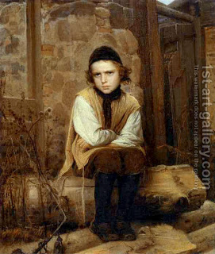

Kiddushin 29 - Things that father has to do for his son
The father's obligations what involve his son are: to circumcise him, to redeem him if he is a firstborn (by paying fives coins to a Kohen), to teach him Torah, to take a wife for him (that is, to help him find a wife and assist him in preparations for marriage) and to teach him a craft. Some say, father is obligated teach him to swim in water.
Rabbi Yehudah says, "Anyone who does not teach his son a craft has taught him banditry. Talmud: "Can you really think so? - Rather, as if the father taught him banditry."